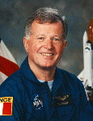

Lyndon B. Johnson Space Center
Houston, Texas 77058
|
National Aeronautics and Space Administration Lyndon B. Johnson Space Center Houston, Texas 77058 |
 |
Biographical Data |
||
JEAN-LOUP J.M. CHRTIEN, BRIGADIER-GENERAL,
FRENCH AIR FORCE (RET.)
NASA MISSION SPECIALIST ASTRONAUT (FORMER)
PERSONAL DATA: Born August 20, 1938, in the town of La Rochelle, France. Married to Amy Kristine Jensen of New Canaan, Connecticut. Five children (one deceased). Hobbies include skiing in Winter and sailing in Summer. He also enjoys golf, wind-surfing, car-rallying and woodworking. In addition, he plays the church organ, and took an electric one with him during his first stay in Star City, Russia. His father, Jacques, was a Navy sailor, and his mother, the former Marie-Blanche Coudurier, was a housewife. Her parents, Nels and Betty Jensen, reside in Tarpon Springs, Florida.
EDUCATION: Chrtien was educated at L'Ecole communale a Ploujean, the College Saint-Charles a Saint-Brieuc, and the Lycee de Morlaix. He entered L'Ecole de l' Air (the French Air Force Academy) at Salon deProvence in 1959, and graduated in 1961, receiving a masters degree in aeronautical engineering.
ORGANIZATIONS: Member of the board of the Accademie de l' Air et de l' Espace, and the French Air and Space Museum. Former Counselor for Space Activities (Manned) to the President of Dassault Aviation. Member of the American Institute of Aeronautics and Astronautics, the International Academy of Astronautics, and the Association of Space Explorers. Member of the Board of BRIT AIR, an airline in his hometown, Morlaix.
SPECIAL HONORS: Awarded the title of Hero of the Soviet Union. Recipient of the Order of Lenin; the Order of the Red Banner of Labor; Commandeur de la Lgion dHonneur (Commander of the Order of the Legion of Honor); Chevalier de l'Ordre National du Mrite (Knight of the National Order of Merit); Titulaire de la Mdaille de l'Aronautique (Holder of the Aeronautics Medal), and honorary citizenship of Arkalyk.
EXPERIENCE: Chrtien received his fighter pilot/pilot-engineer wings in 1962, after one year of training on Mystere-4s. He was promoted to Lieutenant, and joined the 5th Fighter Squadron in Orange, in the Southeast of France, where he served for seven years as a fighter pilot in an operational squadron flying Super-Mystere B2s and then Mirage III interceptors. In 1970, he was assigned to the French test pilots school, EPNER (Ecole du Personnel Navigant d'Essais et de Rception), then served as a test pilot at the Istres Flight Test Center for seven years. During that time he was responsible for supervising the flight test program for the Mirage F-1 fighter. In 1977-78, he was appointed Deputy Commander of the South Air Defense Division in Aix en Provence, and he served in this position until his selection as a cosmonaut in June 1980. Chrtien remained a French Air Force officer but was placed on detachment to CNES for his space flight activities ensuring his availability for future flights with the Shuttle (NASA), Mir (Soviet Union) or Spacelab (ESA). He has accumulated over 8000 hours of flying time in various aircraft, including Russias Tupolev 154, MIG 25, and Sukoi 26 and 27. A veteran of three space flights, Chrtien was the 10th Intercosmos cosmonaut, and has spent a total of 43 days, 11 hours, 18 minutes, 42 seconds in space, including an EVA of 5 hours, 57 minutes.
In April 1979, the Soviet Union offered France the opportunity to fly a cosmonaut on board a joint Soviet-French space flight, along the same lines as the agreement to fly non-Soviet cosmonauts from member countries of the Intercosmos program. The offer was accepted, and France began a cosmonaut selection program in September 1979. Chrtien was one of two finalists named on June 12, 1980. He started training at the Yuri Gagarin Cosmonaut Training Center in September 1980. The following year he was named as the research-cosmonaut for the prime crew of the Soyuz T-6 mission.
Soyuz T-6 was launched on June 24, 1982, and Chrtien, Dzhanibekov and Ivanchenkov linked up with Salyut 7 and joined the crew of Berezovoi and Lebedev already on board. They spent nearly seven days carrying out a program of joint Soviet-French experiments, including a series of French echography cardiovascular monitoring system experiments, before returning to Earth after a flight lasting 7 days, 21 hours, 50 minutes, 42 seconds. This flight made him the first Western non-American to go to space, as well as the first Western European.
Following the mission he was appointed Chief, CNES Astronaut Office.
Chrtien was selected as the back-up payload specialist for STS-51G. During 1984-85, he participated in mission training at the Johnson Space Center.
Chrtien made his second space flight as a research-cosmonaut on board Soyuz TM-7, which launched on November 26, 1988. Together with Volkov and Krikalev, he linked up with Mir 1 and joined the crew of Titov Manarov and Polyakov already on board. They spent 22 days carrying out a program of joint Soviet-French experiments, including a 5 hour and 57 minute EVA by Volkov and Chrtien during which the two men installed the French ERA experimental deployable structure and a panel of material samples. In making the EVA, he became the first non-American and non-Soviet cosmonaut to walk in space. In addition, he was the first non-Soviet cosmonaut to make a second space flight aboard a Soviet spacecraft. The mission lasted 24 days, 18 hours, 7 minutes.
During 1990-93, Chrtien participated in Buran spacecraft pilot training at the Moscow Joukovski Institute. He has also flown the Tupolev 154 and MIG 25 aircraft, flying simulators equivalent to the Shuttle Training Aircraft (STA).
Chrtien is fluent in English and Russian.
NASA EXPERIENCE: Chrtien attended ASCAN Training at the Johnson Space Center during 1995. He was initially assigned to work technical issues for the Operations Planning Branch of the Astronaut Office. He served on the crew of STS-86 Atlantis (September 25 to October 6, 1997) the seventh mission to rendezvous and dock with the Russian Space Station Mir. Highlights included the delivery of a Mir attitude control computer, the exchange of U.S. crew members Mike Foale and David Wolf, a spacewalk by Scott Parazynski and Vladimir Titov to retrieve four experiments first deployed on Mir during the STS-76 docking mission, the transfer to Mir of 10,400 pounds of science and logistics, and the return of experiment hardware and results to Earth. Mission duration was 10 days, 19 hours, 21 minutes.
Chretien retired from NASA in 2001 and has shifted his focus to developing a business career in the Houston, Texas area.
JANUARY 2002
{kind=link}